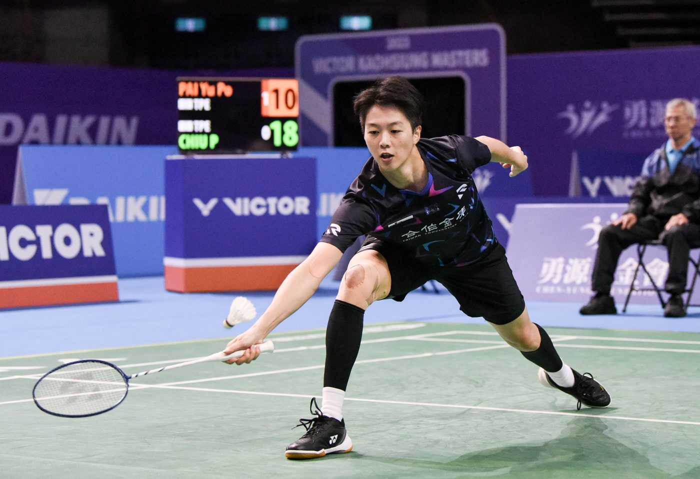
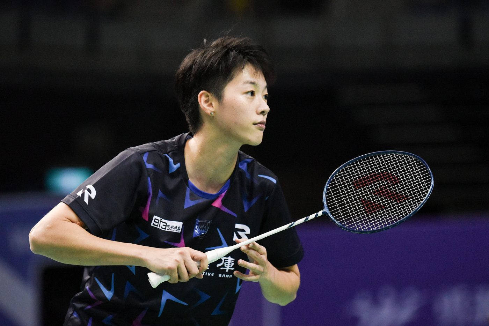

01我的故事
再多難關依舊堅持
白馭珀的羽球歷程一路走來並不輕鬆，2014年世界大學羽球錦標賽勇奪女單冠軍，2015光州世大運雙也為國家贏得銅牌，女單最高一路上升到第20名，當時的她已經準備好要在國際賽場發光。
不過卻不如想像中地順利，2016無緣迎來生涯第一場奧運，緊接著需面對手肘及膝蓋傷勢進行手術，當時也迫使她不得不轉換跑道打雙打。
但這一切沒有澆熄她的鬥志，積極復健為東京奧運資格做準備。豈料，卻遇上了嚴重的疫情，全球的賽事受到嚴重影響，也打亂了白馭珀拼積分的計劃，最終再度無緣站上奧運賽場。
疫情後，白馭珀決定為2024巴黎奧運資格努力，鬥志十足的她卻在2024年初舊傷復發，再度陷入低谷當中，即便忍痛上場拼到最後一場，仍未能如願。
2025年，她決定申請世界排名保護積極治療傷勢，利用3-6個月的時間治療及復健，期待能於下半年重返國際賽場，再度為突破自己世界排名前20的目標努力。

